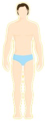

185
身高/cm
119
当前体重/斤
21.9
BMI
您的详细数据
体脂率:
26.6%
骨量:
19%
肌肉率:
35.6%

水分率:
20.3%
心率:
75bpm
基础代谢:
1167卡
偏瘦:<18.5
正常:18.5~23.9
偏胖:24~27.9
肥胖:≥28
体脂率
BMI
骨量
肌肉率
水分率
心率
标准值：18.5~23.9
BMI是与体内脂肪总量密切相关的指标，该指标考虑了体重和身高两个因素。